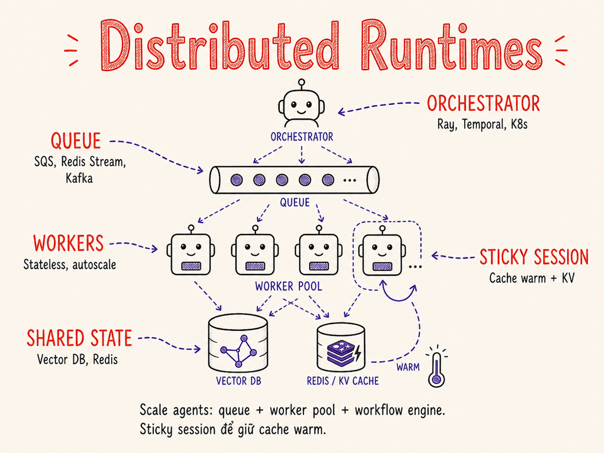

Distributed Agent Runtimes
Từ một Python script đơn độc đến fleet of workers chạy song song — kiến trúc phân tán cho AI agents: queue, worker pool, agent mesh, sticky session, và cách đảm bảo hệ thống không sập khi một phần thất bại.

41.1 Tại sao cần phân tán agent?
Một AI agent đơn lẻ chạy trên một process có thể xử lý vài chục request đồng thời trước khi chạm giới hạn. Khi sản phẩm scale, bốn lý do buộc ta phải nghĩ đến distributed agent runtime:
Horizontal Scale
Thêm instance = thêm capacity. Không bị giới hạn bởi RAM/CPU của một máy. Mỗi worker xử lý một subset task — tổng throughput tăng tuyến tính (lý tưởng).
Parallelism
Nhiều agent con (sub-agents) trong một workflow có thể chạy song song. Ví dụ: phân tích 50 tài liệu cùng lúc thay vì tuần tự — giảm wall-clock time từ hàng giờ xuống vài phút.
Fault Isolation
Một worker crash không kéo chết toàn bộ hệ thống. Task bị trả lại queue để worker khác tiếp tục. Failure scope được kiểm soát ở mức process/pod, không phải mức toàn ứng dụng.
Geo-distribution
Deploy workers gần người dùng (us-east, eu-west, ap-southeast) để giảm round-trip latency. Đặc biệt quan trọng với real-time agents cần phản hồi dưới 2 giây.
41.2 Giới hạn của single-host model
Trước khi phân tán, cần hiểu tại sao chạy agent trên một máy lại có trần:
1 agent per process model
Nhiều agent framework (LangChain, CrewAI v1) thiết kế agent như một object Python chạy trong một thread. Concurrency giới hạn bởi asyncio event loop — ổn với I/O-bound tasks (gọi API), nhưng nếu một agent block thread (CPU-bound, long sleep), các agent khác phải chờ.
GIL — Global Interpreter Lock
CPython có GIL: chỉ một thread Python thực thi bytecode tại một thời điểm. Multi-threading không
giúp CPU-bound code. Giải pháp: multiprocessing — mỗi worker là một process riêng,
có GIL riêng. Đây là lý do tại sao queue + worker process là pattern đúng đắn, không phải thread pool.
GPU sharing issues
Nếu agent cần dùng local model (embedding, reranker, nhỏ), nhiều process cùng load model lên GPU gây OOM hoặc context switch tốn kém. Giải pháp: tách model serving ra một microservice riêng (dùng vLLM/TGI), các workers chỉ gọi HTTP/gRPC — không giữ GPU context trong worker process.
ThreadPoolExecutor với N threads không bypass GIL cho CPU-bound code.
Và nếu một thread bị stuck (rate limit backoff dài, I/O timeout), nó chiếm slot trong pool.
Dùng process-based worker (separate process) + message queue là pattern đúng
cho distributed agent workloads.
41.3 Queue-based orchestration
Pattern cơ bản nhất cho distributed agents: producer–consumer qua message queue. Producer tạo task và đẩy vào queue; worker pool (consumers) lấy task ra, xử lý, và acknowledge.
Các lựa chọn queue phổ biến
| Queue | Throughput | Delivery guarantee | Visibility timeout | Phù hợp với agent |
|---|---|---|---|---|
| SQS (AWS) | Rất cao | At-least-once | Có (visibility timeout) | Serverless workers, Lambda, ECS tasks |
| RabbitMQ | Cao | At-least-once (với ack) | Qua manual ack/nack | On-prem, nhiều routing pattern phức tạp |
| Redis Streams | Rất cao | At-least-once (consumer group) | Pending entries list (PEL) | Khi đã có Redis, latency thấp, self-hosted |
| Kafka | Cực cao | At-least-once / exactly-once (transactions) | Replay từ offset | Event sourcing, audit log, ML pipeline scale lớn |
Producer–Consumer pattern cho agent tasks
Workflow điển hình: một orchestrator nhận request từ người dùng, chia nhỏ thành agent tasks, đẩy từng task vào queue. Workers lấy task, chạy agent loop, ghi kết quả vào database, và gửi event "done" lại để orchestrator tổng hợp.
# Producer: Orchestrator đẩy task vào queue
import json, boto3
sqs = boto3.client('sqs')
QUEUE_URL = 'https://sqs.us-east-1.amazonaws.com/123/agent-tasks'
def dispatch_agent_task(task_id: str, task_type: str, payload: dict):
message = {
'task_id': task_id,
'task_type': task_type,
'payload': payload,
'retry_count': 0,
}
sqs.send_message(
QueueUrl=QUEUE_URL,
MessageBody=json.dumps(message),
# Route cùng session vào cùng worker (message group)
MessageGroupId=payload.get('session_id', task_id),
)
# Consumer: Worker lấy task và xử lý
async def worker_loop():
while True:
msgs = sqs.receive_message(
QueueUrl=QUEUE_URL,
MaxNumberOfMessages=1,
WaitTimeSeconds=20, # long polling
VisibilityTimeout=300, # 5 phút để xử lý
).get('Messages', [])
for msg in msgs:
task = json.loads(msg['Body'])
try:
result = await run_agent(task)
await db.save_result(task['task_id'], result)
sqs.delete_message( # ACK
QueueUrl=QUEUE_URL,
ReceiptHandle=msg['ReceiptHandle'],
)
except Exception as e:
log_error(task['task_id'], e)
# Không delete → SQS tự retry sau visibility timeout41.4 Worker pool architecture
Worker pool là trụ cột của distributed agent runtime: một tập hợp các stateless worker kéo task từ queue, xử lý độc lập, và ghi state vào external persistent store (database, object storage).
Nguyên tắc worker stateless
Worker phải hoàn toàn stateless: không giữ conversation history, không cache model outputs trong RAM giữa các requests. Tất cả state phải sống ở external store. Điều này cho phép:
- Autoscale in/out bất cứ lúc nào mà không lo mất data
- Bất kỳ worker nào cũng có thể tiếp tục task mà worker khác bỏ dở (sau crash)
- Rolling deploy mà không cần drain session
41.5 Agent mesh / service-oriented architecture
Bước tiếp theo: thay vì các worker generic, mỗi loại agent được triển khai như một microservice riêng biệt với API riêng. Agent "orchestrator" gọi các agent "chuyên biệt" qua HTTP hoặc gRPC/NATS.
gRPC vs NATS vs HTTP
- gRPC: strongly typed (protobuf), bi-directional streaming, hiệu quả cho internal agent-to-agent. Phù hợp khi cần schema contract chặt giữa các team.
- NATS: pub/sub siêu nhanh, fire-and-forget hoặc request-reply, latency ~1ms, không cần schema. Phù hợp cho event-driven agent orchestration.
- HTTP/REST: đơn giản nhất, dễ debug, nhưng overhead hơn gRPC. Phù hợp cho cross-team hoặc khi agent cần expose public API.
A2A Protocol — chuẩn liên-framework cho agent mesh
Tháng 4/2025, Google công bố Agent2Agent (A2A) Protocol — chuẩn mở cho phép các AI agent của các vendor khác nhau khám phá nhau, ủy thác task, và phối hợp qua HTTP + JSON-RPC 2.0 + Server-Sent Events. A2A bổ sung cho MCP (agent↔tool) bằng tầng agent↔agent. Tháng 6/2025, A2A được đóng góp vào Linux Foundation (Apache 2.0); tháng 8/2025, IBM's ACP sáp nhập vào A2A. Đến tháng 4/2026, hơn 150 tổ chức hỗ trợ A2A gồm Google, Microsoft, AWS, Salesforce, SAP, ServiceNow, và IBM.
- Agent Card: mỗi agent publish một JSON "name card" mô tả khả năng — agent khác dùng để discovery.
- Task delegation: agent A giao task cho agent B qua HTTP POST; B có thể stream kết quả về qua SSE.
- Tích hợp với MCP: A2A (agent↔agent) + MCP (agent↔tool) tạo thành interoperability stack đầy đủ.
41.6 Chia sẻ memory giữa distributed agents
Memory của agent (§37) phải được externalize hoàn toàn khi chạy distributed. Ba tier thường gặp:
Working Memory (Redis)
Conversation history, tool results trong một session hiện tại. Redis hash với key
session:{id}:context. TTL 1-24h. Chia sẻ nhanh giữa workers trong
cùng region với sub-millisecond read.
Long-term Memory (Vector DB)
Facts, user preferences, past interactions dưới dạng embedding. Qdrant / Weaviate / Pinecone. Workers đọc/ghi qua API. Coherence đảm bảo bởi DB — không cần lock nếu chỉ append.
Task State (Document DB)
Trạng thái toàn bộ agent task: input, intermediate steps, output, status. MongoDB / DynamoDB. Dùng optimistic locking nếu nhiều workers cùng ghi một document.
Artifact Store (Object Storage)
Files lớn: generated code, PDFs, images. S3 / GCS / R2. Workers upload artifact và lưu URL vào task state. Tránh chuyển binary qua message queue.
Coherence concerns
Khi nhiều workers đọc/ghi cùng một memory slot, có thể xảy ra:
- Lost update: hai workers đọc cùng state, cả hai ghi lại sau khi modify — một bản ghi bị mất. Giải pháp: optimistic locking (
WATCH + MULTItrong Redis,_versiontrong Elasticsearch). - Stale read: worker đọc snapshot cũ trong khi một worker khác vừa cập nhật. Chấp nhận được nếu memory dùng cho retrieval (RAG), không phải cho coordination.
- Thundering herd trên cache: nhiều workers cùng miss cache, cùng gọi LLM để generate, rồi cùng ghi lại. Dùng "lock-before-generate" pattern (distributed lock với Redis SETNX).
41.7 Sticky session / session affinity
Trong nhiều tình huống, muốn route các request từ cùng một session về cùng một worker instance. Lý do chính: KV cache warmth — nếu worker đã xử lý prompt hệ thống và context của session đó, KV cache trong GPU/RAM của worker đã warm. Gọi lại worker cũ = bỏ qua prefill, tiết kiệm latency và compute.
Cách implement sticky routing
- Consistent hashing:
hash(session_id) % N— đơn giản nhưng redistribute khi N thay đổi. Dùng consistent hash ring để tối thiểu redistribution khi scale. - Session table: lưu mapping
session_id → worker_idtrong Redis. Flexible nhưng cần cleanup khi worker down. - K8s Service với session affinity:
sessionAffinity: ClientIP(thô) hoặc dùng Nginx/Envoy với cookie-based affinity.
Worker vẫn phải stateless theo nghĩa: nếu nó crash và task được route sang worker khác, worker mới phải đọc state từ external store và tiếp tục được. Sticky là optimization (cache warmth), không phải dependency. Luôn có fallback path.
41.8 Multi-tenancy at scale
Khi serve nhiều tenant (công ty, người dùng) trên cùng một distributed runtime, cần giải quyết ba bài toán: noisy neighbor, quota enforcement, và isolation model.
Noisy Neighbor Problem
Một tenant chạy batch job lớn (ví dụ: analyze 10,000 documents) có thể chiếm toàn bộ worker pool, làm tenant khác bị delay. Giải pháp:
- Per-tenant queues: mỗi tenant có hàng đợi riêng. Worker pool lấy task theo weighted round-robin — công bằng giữa các tenant.
- Priority queues: premium tier đi queue ưu tiên cao hơn, được serve trước.
- Rate limiting tại queue đầu vào: giới hạn tốc độ enqueue của mỗi tenant.
Per-tenant quota
# Redis-based sliding window rate limit
import time
async def check_tenant_quota(tenant_id: str, limit_per_min: int = 100) -> bool:
now = time.time()
key = f"quota:{tenant_id}:{int(now // 60)}"
count = await redis.incr(key)
if count == 1:
await redis.expire(key, 120) # TTL 2 phút
return count <= limit_per_minDedicated vs Shared workers
| Model | Isolation | Chi phí | Phù hợp |
|---|---|---|---|
| Shared workers | Logical (quota) | Thấp — dùng chung infra | SMB, free/starter tier |
| Dedicated worker pool per tenant | Process-level | Cao — N pools × infra cost | Enterprise, SLA guarantee |
| Dedicated namespace (K8s) | Network + resource quota | Vừa | Mid-market, cần compliance |
| Dedicated cluster | Infra-level | Rất cao | Bank, government, data residency |
41.9 Frameworks: Ray, Kubernetes, Modal, Dapr Agents, Cloudflare Agents, managed runtimes
| Framework | Use case chính | Ngôn ngữ | Durability | Cost model | Đặc điểm nổi bật |
|---|---|---|---|---|---|
| Ray / Ray Serve | Distributed Python compute, model serving, agent parallelism | Python-first | Ephemeral (state cần external store) | Self-host hoặc Anyscale cloud | @ray.remote cho distributed actor; Ray Serve cho HTTP; tốt cho map-reduce trên nhiều agent |
| Temporal | Durable workflow orchestration, long-running agents | Python, Go, Java, TypeScript | Cao — event sourcing, replay | Self-host hoặc Temporal Cloud | Tích hợp OpenAI Agents SDK GA (3/2026); Nexus + Multi-Region Replication GA (99.99% SLA); 9.1 nghìn tỷ executions; tốt cho multi-step agent |
| Dapr Agents | Production-grade agent runtime, durable multi-agent workflows | Python (thêm ngôn ngữ qua sidecar) | Cao — mọi LLM call & tool call được checkpoint vào state store | Self-host (CNCF open-source) | GA v1.0 (CNCF, 3/2026); mỗi agent có cryptographic identity; built-in connectivity 50+ enterprise data sources; dựa trên Dapr Workflow engine đã battle-tested |
| AutoGen v0.4 | Multi-agent conversation, distributed actor-based agents | Python, .NET | Ephemeral (cần tích hợp external persistence) | Open-source (Microsoft Research) | Kiến trúc lại hoàn toàn (1/2025) theo actor model; async message exchange; AgentChat API cấp cao + Core API cho distributed scenario; cross-language Python/.NET |
| Cloudflare Agents | Serverless edge agents, durable actor runtime toàn cầu | JavaScript/TypeScript, Python | Cao — Durable Objects + step-based journaling (Project Think, 4/2026) | Pay-per-use, scale-to-zero, không tốn phí khi idle | Agents Week 4/2026: Dynamic Workers (V8 isolate cold start <5ms), Sandboxes GA, Cloudflare Mesh; phù hợp edge + global low-latency |
| AWS Bedrock AgentCore | Managed production agent runtime trên AWS | Bất kỳ (mang framework của bạn) | Cao — session isolation microVM, managed memory, tool gateway | Managed (serverless, per session) | GA 10/2025; framework-agnostic (LangGraph, CrewAI, LlamaIndex, Strands); mỗi user session = isolated microVM; tích hợp IAM, CloudWatch |
| Vertex AI Agent Engine | Managed agent runtime trên Google Cloud | Python (ADK) | Cao — managed state & session persistence | Managed (Google Cloud pricing) | ADK đạt 7 triệu downloads Q1/2026; Wells Fargo là ngân hàng đầu tiên deploy agents toàn công ty trên Vertex AI; tích hợp A2A native |
| Kubernetes Jobs | Batch agent tasks, one-off jobs, CronJobs | Bất kỳ (container) | Job level (restart on failure) | Self-host (EKS, GKE, AKS) | Chuẩn infra, HPA, KEDA cho autoscale; không có built-in agent logic |
| Modal | Serverless GPU functions, cold start <1s, scale-to-zero | Python | Ephemeral (stateless functions) | Pay per second GPU usage | Đơn giản nhất để bắt đầu; built-in container + GPU; tốt cho event-triggered agent workloads |
Ray Actors cho distributed agent state
import ray
@ray.remote
class AgentWorker:
def __init__(self, agent_type: str):
self.agent_type = agent_type
self.llm = LLMClient()
async def run_task(self, task: dict) -> dict:
context = await redis.get(task['session_id'])
result = await self.llm.run_agent_loop(task, context)
await redis.set(task['session_id'], result['new_context'])
return result
# Tạo pool 10 workers, phân tán qua Ray cluster
workers = [AgentWorker.remote('research') for _ in range(10)]
tasks = [w.run_task.remote(t) for w, t in zip(workers, batch)]
results = ray.get(tasks) # parallel execution41.10 Workflow orchestrators: Temporal, Inngest, Restate, LangGraph Platform
Queue-based worker pool giải quyết parallelism và scale, nhưng thiếu một thứ quan trọng: durability — khả năng resume từ đúng bước mà không mất progress khi hệ thống crash. Đây là lúc workflow orchestrators phát huy. Kể từ 2025, đây là lớp hạ tầng tăng trưởng nhanh nhất trong AI agent stack.
Temporal cho distributed agent coordination
Temporal lưu toàn bộ workflow execution history dưới dạng events. Khi workflow crash, Temporal replay history để reconstruct state — agent tiếp tục từ đúng bước cuối cùng. Không cần viết retry logic, checkpoint logic thủ công. Tháng 3/2026, Temporal + OpenAI Agents SDK integration đạt GA — agent OpenAI tự động được bao bọc bởi durable execution, handle rate limit và crash mà không cần code thêm. Temporal Nexus (cross-namespace workflow) và Multi-Region Replication (SLA 99.99%) cũng đạt GA cùng thời điểm.
# Temporal workflow cho multi-step agent
from temporalio import workflow, activity
@activity.defn
async def run_research_agent(query: str) -> str:
return await research_agent.run(query)
@activity.defn
async def run_code_agent(spec: str) -> str:
return await code_agent.run(spec)
@workflow.defn
class MultiAgentWorkflow:
@workflow.run
async def run(self, user_request: str) -> str:
# Step 1: Research — retry tự động nếu thất bại
research = await workflow.execute_activity(
run_research_agent,
user_request,
start_to_close_timeout=timedelta(minutes=5),
retry_policy=RetryPolicy(maximum_attempts=3),
)
# Step 2: Code gen — chỉ chạy nếu research thành công
code = await workflow.execute_activity(
run_code_agent, research,
start_to_close_timeout=timedelta(minutes=10),
)
return code
# Nếu crash ở step 2 → Temporal replay lại, bỏ qua step 1 (đã done)Inngest — event-driven, dễ tích hợp serverless
Inngest dùng HTTP webhook thay vì gRPC — dễ tích hợp vào Next.js/Vercel/serverless.
Phù hợp với stack JavaScript/TypeScript. Workflow định nghĩa bằng inngest.createFunction(),
trigger bởi events, tự retry với backoff. Phù hợp cho các team đã dùng Vercel/edge functions
và muốn thêm durability mà không vận hành Temporal server riêng.
Restate — durable execution nhẹ hơn, serverless-native
Restate dùng cùng cơ chế journal/replay như Temporal nhưng với footprint nhẹ hơn đáng kể. Restate Cloud mở public 2025 với usage-based pricing. Điểm khác biệt: Restate tích hợp tốt với serverless (Cloudflare Workers, AWS Lambda) và hỗ trợ durable sessions — stateful entity tồn tại qua nhiều invocations mà không cần external Redis. Tháng 2025, Restate ra integration với Pydantic AI để thêm durable execution cho agent loop Python với chỉ vài dòng code.
LangGraph Platform (LangGraph 1.0)
LangGraph 1.0 (stable release cuối 2025) là framework durable agent đầu tiên đạt major version. LangGraph Platform (trước gọi là LangGraph Cloud, đổi tên thành LangSmith Deployment 10/2025) là managed hosting layer cho agent LangGraph. Tính năng: checkpointing, durable execution, human-in-the-loop approvals, "Remote Graphs" (gọi agent khác như microservice trong multi-agent architecture). Được dùng bởi Uber, LinkedIn, Klarna ở production.
41.11 Observability qua distributed system
Khi agent chạy qua nhiều process/service/region, một log trong một container không đủ. Cần distributed tracing để hiểu toàn bộ hành trình của một request.
Trace propagation
Mỗi request sinh ra một trace_id duy nhất. Khi orchestrator gọi worker, nó truyền
traceparent header (W3C Trace Context). Worker tạo span con trong cùng trace.
Cuối cùng toàn bộ execution visualized như một cây span trong Jaeger / Tempo / Honeycomb.
from opentelemetry import trace
from opentelemetry.propagate import inject, extract
tracer = trace.get_tracer("agent-worker")
async def handle_task(task: dict, carrier: dict):
# Khôi phục trace context từ queue message header
ctx = extract(carrier)
with tracer.start_as_current_span("agent.run_task", context=ctx) as span:
span.set_attribute("task.type", task['task_type'])
span.set_attribute("task.id", task['task_id'])
result = await run_agent(task)
span.set_attribute("agent.tool_calls", result['tool_count'])
return result
# Producer: inject trace context vào message
def enqueue_task(task: dict):
carrier = {}
inject(carrier) # thêm traceparent vào carrier
sqs.send_message(Body=json.dumps(task), MessageAttributes=carrier)Key metrics cần monitor
- Queue depth: số task đang chờ — spike báo hiệu worker thiếu hoặc task đột biến.
- Task duration P50/P95/P99: phát hiện tasks bị stuck hoặc slow worker.
- Worker utilization: tỷ lệ worker đang xử lý task — quá thấp = over-provisioned, quá cao = cần scale.
- Error rate per task type: phân loại lỗi theo agent type để debug nhanh.
- LLM token usage per session: detect runaway agents tiêu thụ token bất thường.
41.12 Failure modes trong distributed agent systems
Distributed systems fail theo nhiều cách. Dưới đây là các failure mode phổ biến nhất và cách xử lý:
Checklist failure handling
- Idempotency: mỗi task có
idempotency_key. Trước khi xử lý, check xem task đã done chưa. Nếu đã done, skip và ACK. - Dead letter queue (DLQ): sau N lần retry thất bại, task vào DLQ để debug thủ công, không loop vô tận.
- Circuit breaker: nếu LLM API trả 429/503 liên tiếp, open circuit — không gọi tiếp trong T giây. Giảm load lên downstream khi nó đang căng thẳng.
- Timeout mọi LLM call: không để worker block vô thời hạn. Hard timeout + deadline propagation.
- Backpressure: nếu queue depth vượt threshold, từ chối nhận task mới và trả lỗi 429 về phía client.
41.13 Tối ưu chi phí at scale
Spot instances / Preemptible VMs
Spot instances (AWS) / Preemptible VMs (GCP) rẻ hơn on-demand 60-90%. Workers là stateless và task được re-queued khi spot bị reclaim — hoàn toàn phù hợp với spot. Chỉ cần handle spot interruption signal: worker drain task hiện tại (tối đa 2 phút), không nhận task mới, graceful shutdown.
Autoscale to zero
Nếu queue empty, scale worker count về 0. Khi task mới đến, scale up. KEDA (Kubernetes Event-driven Autoscaling) có native support cho SQS, RabbitMQ, Kafka queue depth.
# KEDA ScaledObject — scale workers theo SQS queue depth
apiVersion: keda.sh/v1alpha1
kind: ScaledObject
spec:
scaleTargetRef:
name: agent-worker-deployment
minReplicaCount: 0 # scale to zero khi idle
maxReplicaCount: 50
triggers:
- type: aws-sqs-queue
metadata:
queueURL: https://sqs.us-east-1.amazonaws.com/123/agent-tasks
queueLength: "5" # 1 worker per 5 messages in queue
awsRegion: us-east-1Batch scheduling
Không phải task nào cũng cần xử lý ngay. Nhóm non-urgent tasks vào batch:
chạy vào giờ thấp điểm (3-6 AM), dùng spot instances, fill idle capacity.
Dùng K8s CronJob hoặc delay trong Temporal workflow để defer execution.
41.14 Cold start mitigation
Agent worker cold start bao gồm: container pull, process start, model load (nếu có local model), kết nối DB/Redis/LLM. Tổng có thể mất 10-60 giây — quá lâu cho real-time agents.
Warm pool strategy
Duy trì một số lượng tối thiểu workers đã khởi động và sẵn sàng nhận task (nhưng không nhận task cho đến khi được promote). Khi scale event xảy ra, promote warm instance ra production pool ngay lập tức (sub-second), đồng thời spin up thêm warm instance để bù vào.
Các kỹ thuật giảm cold start
- Container image pre-pull: pull image sẵn trên mọi node, không chờ khi scale.
- Lazy model loading: nếu worker gọi external LLM API (không load local model), cold start chỉ là process start — vài giây.
- Connection pool warm-up: khi worker start, mở sẵn DB/Redis connections trước khi nhận task đầu tiên.
- Minimum replicas = 1 hoặc 2: không scale về 0 nếu traffic thường xuyên, trừ khi overnight downtime chấp nhận được.
- Provisioned concurrency (Lambda): giữ N Lambda instance warm với provisioned concurrency — trả phí khi idle nhưng không có cold start.
41.15 Cách cũ vs cách hiện tại (2026)
Hành trình từ "một Python script trong container" đến "distributed agent runtime đầy đủ":
Triển khai: Một Python script (hoặc Flask app) chạy trong một Docker container, xử lý request đồng bộ. Muốn scale thì nhân bản container và để load balancer chia đều — nhưng tất cả state nằm trong RAM của process.
Concurrency: ThreadPoolExecutor với 4-8 threads, hoặc asyncio event loop đơn. GIL không được bypass. CPU-bound agent step block toàn bộ.
Fault handling: Crash = mất tất cả. Phải restart container, task đang xử lý biến mất. Retry logic viết thủ công mỗi nơi một kiểu.
Observability: print() và log file. Không trace context, không metric. Debug = SSH vào container xem log.
Scale: Scale thủ công — thêm container khi CPU cao, bớt khi thấp. Không scale to zero.
→ Fragile, không fault-tolerant, tốn chi phí, debug khó, không scale well
Triển khai: Message queue (SQS/RabbitMQ) + stateless worker pool, hoặc managed agent runtime (AWS Bedrock AgentCore GA 10/2025, Vertex AI Agent Engine, Cloudflare Agents). Orchestrator đẩy task vào queue, workers kéo task ra xử lý. State externalized vào Redis + VectorDB + MongoDB. Spot instances cho cost efficiency.
Concurrency: N worker processes, mỗi process là một asyncio event loop. Scale = thêm pod. KEDA autoscale theo queue depth, scale to zero khi idle. Cloudflare Agents dùng V8 isolates cold start <5ms cho edge scenarios.
Fault handling: Task có idempotency key. Worker crash → task về queue (visibility timeout) → worker khác retry. DLQ cho tasks fail nhiều lần. Circuit breaker trước LLM API. Temporal/Inngest/Restate/LangGraph Platform cho durable multi-step workflow. Dapr Agents v1.0 (CNCF) checkpoint mọi LLM call và tool execution.
Agent interop: A2A Protocol (Google → Linux Foundation 6/2025, 150+ orgs 4/2026) cho agent-to-agent cross-framework communication. MCP (agent↔tool) + A2A (agent↔agent) tạo interoperability stack đầy đủ.
Observability: OpenTelemetry distributed tracing với trace context propagated qua queue headers. Spans cho mỗi agent step, LLM call, tool call. Dashboard Grafana với queue depth, P95 latency, error rate by task type.
Scale: KEDA autoscale 0 → 50 workers theo queue depth. Warm pool cho latency-sensitive path. Spot instances. Batch scheduling cho non-urgent tasks vào giờ thấp điểm.
→ Fault-tolerant, observable, cost-optimized, horizontally scalable, interoperable qua A2A
Phần lớn startups không cần Temporal + Ray + KEDA ngay từ đầu. Bắt đầu với SQS + ECS Tasks hoặc thậm chí Redis Queue + 3 worker containers là đủ cho 99% use cases dưới 1000 concurrent agents. Add complexity khi bạn có bằng chứng cần nó, không phải khi bạn đọc docs và thấy "hay ho".
Tóm tắt
- Lý do phân tán: horizontal scale, parallelism, fault isolation, geo-distribution — bốn lý do cốt lõi buộc agent rời single process.
- Worker stateless là bắt buộc: mọi state sống ở external store (Redis, VectorDB, MongoDB, S3). Worker có thể crash và task được retry bởi worker khác.
- Queue-based orchestration là nền tảng: SQS / RabbitMQ / Redis Streams / Kafka — producer đẩy task, consumer (worker) kéo ra, ACK khi done, không ACK nếu fail.
- Sticky session là optimization: route cùng session về cùng worker để tận dụng KV cache warmth, không phải requirement. Luôn có fallback path.
- Multi-tenancy: per-tenant queue + weighted round-robin + rate limiting tại đầu vào. Dedicated vs shared worker pool tuỳ theo tier và SLA.
- Workflow orchestrators (Temporal/Inngest/Restate/LangGraph Platform): dùng khi cần durable multi-step agent với retry tự động và replay-on-crash. Temporal đạt 9.1 nghìn tỷ executions với SLA 99.99%; Restate và LangGraph Platform phù hợp hơn cho serverless và Python stack. Dapr Agents v1.0 (CNCF GA 3/2026) là lựa chọn mạnh cho Kubernetes-native, framework-agnostic.
- Observability phân tán: propagate trace context qua queue headers, dùng OpenTelemetry spans cho mọi agent step. Không có distributed tracing = debugging mù.
- Failure modes: retry storm → exponential backoff + jitter; partial failure → at-least-once + idempotency key; cascading → circuit breaker + backpressure.
- Cost: spot instances + autoscale to zero + batch scheduling có thể giảm 70-80% chi phí compute so với on-demand constant capacity.
- Cold start: warm pool + lazy model loading + connection pre-warming. Scale to zero chỉ khi chấp nhận được cold start latency (batch workload, overnight jobs). Cloudflare Agents với V8 isolates đạt cold start <5ms — phù hợp cho edge real-time agents.
- A2A Protocol: chuẩn mở agent-to-agent (Google → Linux Foundation 6/2025, Apache 2.0, 150+ tổ chức hỗ trợ 4/2026). Kết hợp với MCP tạo interoperability stack đầy đủ cho multi-agent cross-vendor systems.
- Managed runtimes: AWS Bedrock AgentCore (GA 10/2025), Vertex AI Agent Engine, và Cloudflare Agents mang session isolation, memory quản lý, và security built-in — giảm đáng kể infra burden cho team nhỏ.